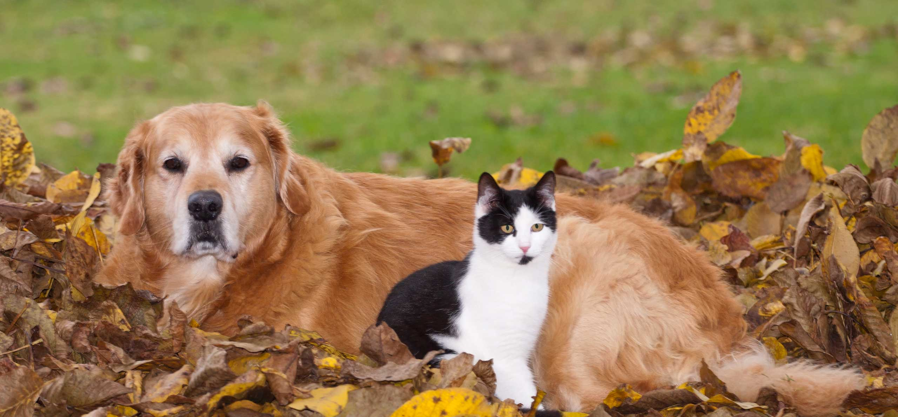
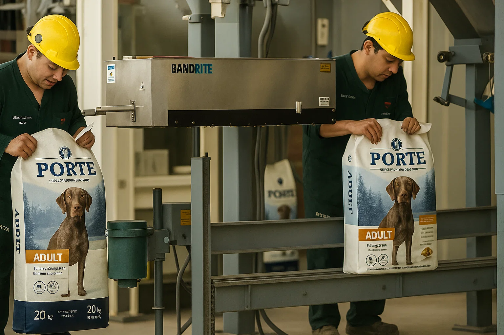

Familia Porte
Nuestro objetivo
Cuidamos lo que más querés, con recetas hechas para su bienestar

En PORTE trabajamos con una misión clara: mejorar la calidad de vida de las mascotas a través de una nutrición premium y balanceada. Creemos que una buena alimentación es la base para que los perros y gatos vivan más felices, más activos y llenos de vitalidad.
Nos esforzamos día a día para crear fórmulas completas, desarrolladas junto a especialistas en nutrición animal, con ingredientes seleccionados que aportan todo lo que tu mascota necesita para crecer fuerte, sano y con energía.
¿Qué nos hace diferentes?
No es solo alimento, es un compromiso con la salud animal
- Ingredientes naturales y seleccionados: utilizamos proteínas de alta calidad, cereales saludables y grasas esenciales que favorecen la digestión y la energía.
- Balance nutricional óptimo: cada fórmula está pensada para ofrecer el equilibrio perfecto de proteínas, vitaminas y minerales.
- Recetas para cada etapa: desde cachorros hasta adultos y senior, tenemos una opción para cada momento de la vida de tu mascota.
- Apoyo veterinario: trabajamos con expertos en nutrición animal para garantizar que cada porción aporte lo necesario para una vida saludable.
- Sabor irresistible: porque sabemos que lo que más importa es que a ellos les encante.

Nuestro objetivo
Alimentar bien es un acto de amor y responsabilidad
- Innovamos constantemente en la elaboración de nuestras recetas.
- Cuidamos cada detalle, desde la selección de materias primas hasta el envasado final.
- Nos comprometemos con la sustentabilidad, reduciendo el impacto ambiental en nuestros procesos productivos.
- Apostamos a una relación de confianza con los tutores de mascotas, brindando transparencia en nuestros ingredientes y procesos.